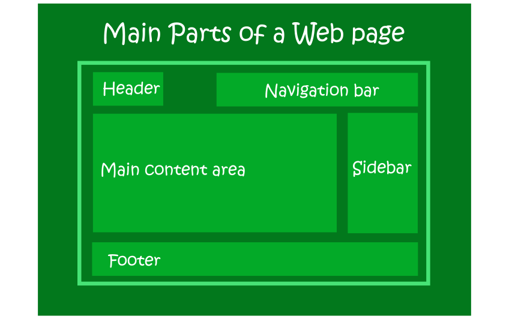
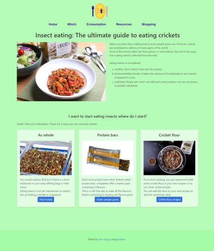
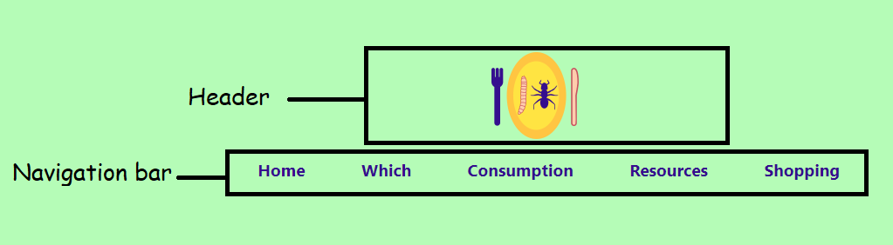
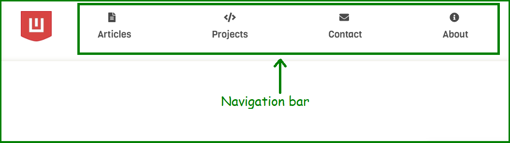
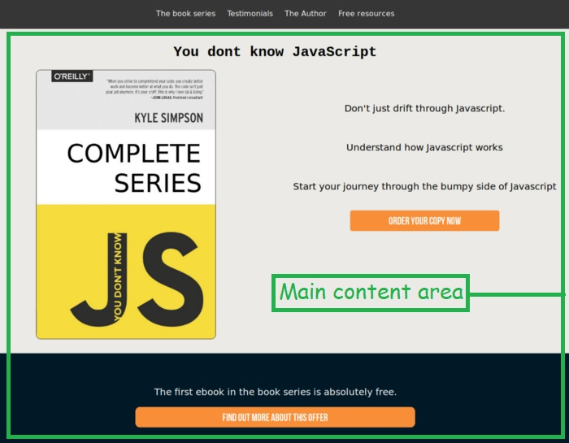
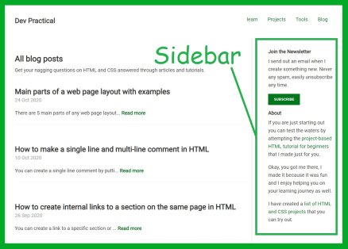
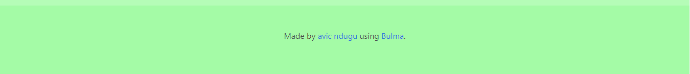

Phân biệt và gọi tên các thành phần


Main parts of a web page layout
Có 5 phần chính của bất kỳ bố cục trang web nào mà bạn sẽ gặp phải.
Đó là: tiêu đề thanh điều hướng khu vực nội dung chính thanh bên
chân trang Hầu hết các trang web sẽ chứa tất cả năm phần. Tuy nhiên,
một số trang web có thể lược bỏ một số phần, ví dụ: - trang đích
hoặc trang bán hàng có thể bỏ qua thanh bên. - một trang web một
trang có thể bỏ qua thanh điều hướng. - một trang web có thể đặt
thanh điều hướng ở vị trí thường đặt thanh bên. Đừng lo lắng nếu bây
giờ những thuật ngữ này giống như biệt ngữ. Vào cuối thời gian của
chúng ta cùng nhau, bạn sẽ hiểu rõ về từng phần của bố cục trang web
và chức năng của nó.

5 Main parts of a web page layout with their functions
Bố cục trang web là một khía cạnh quan trọng của một trang web. Bố
cục được lên kế hoạch tốt cho phép khách truy cập dễ dàng điều hướng
và tương tác với trang web. Sau đây là những phần quan trọng chính
của phần lớn bố cục trang web:

Headers
Đây là phần trên cùng của một trang web có chứa logo hoặc tên của
trang web. Người đọc của bạn có thể biết liệu họ có vào trang web
của bạn hay không nhờ vào thương hiệu trên tiêu đề.

Navigation bars or Menu bars
Thanh điều hướng của bạn xuất hiện ở đầu mỗi trang trên trang web
của bạn. Nó có thể xuất hiện bên cạnh tiêu đề hoặc ngay bên dưới
tiêu đề. Thanh menu của bạn giúp khách truy cập trang web của bạn
nhấp vào các phần khác nhau trên trang web của bạn, tức là điều
hướng xung quanh trang web của bạn. Trên thiết bị di động, thanh
điều hướng thường được thu gọn thành menu hamburger (ba dòng). Để
truy cập các mục menu, bạn chỉ cần nhấp vào menu hamburger để truy
cập các liên kết.

Main Content area
Đây là thông tin duy nhất mà khách truy cập của bạn đến để tương
tác. Nó thường có tiêu đề và sau đó là nội dung văn bản, hình ảnh,
video bên dưới nó. Bạn có thể đặt nội dung hấp dẫn sẽ khai sáng hoặc
giải trí cho khách truy cập trang web của bạn. Bạn phải đảm bảo rằng
mỗi trang web bạn tạo sẽ gửi một thông điệp duy nhất tới những khách
truy cập tương tác với trang đó.

Sidebars
Thanh bên là một phần trên trang web xuất hiện bên cạnh khu vực nội
dung chính. Nó thường chiếm một không gian hẹp hơn khu vực nội dung
chính. Bạn có thể thêm biểu mẫu đăng ký, hộp tìm kiếm, quảng cáo sản
phẩm hoặc phần giới thiệu trên thanh bên sẽ xuất hiện trên mỗi trang
trên trang web của bạn. Trên thiết bị di động, thanh bên được di
chuyển từ bên phải của trang web xuống dưới cùng, ngay bên dưới khu
vực nội dung chính. Trên các trang web đặc biệt như trang đích, các
thanh bên không xuất hiện để chúng không làm khách truy cập mất tập
trung vào thông điệp của trang web.

Footers
Chân trang của bạn xuất hiện ở cuối mỗi trang trên trang web của
bạn. Thông thường, chân trang chứa nội dung pháp lý và thông báo,
vd. thông báo bản quyền, chính sách bảo mật và tuyên bố từ chối
trách nhiệm liên kết. Chân trang của bạn cũng có thể chứa các liên
kết quan trọng khác như: liên kết giới thiệu và liên hệ, liên kết
biểu tượng mạng xã hội và liên kết nút đóng góp.
 NAVIGATION dọc
NAVIGATION dọc
 NAVIGATION ngang trong header
NAVIGATION ngang trong header
 Header lớn Navigation nhở
Header lớn Navigation nhở

 Dialod html
Dialod html
 Modal html
Modal html